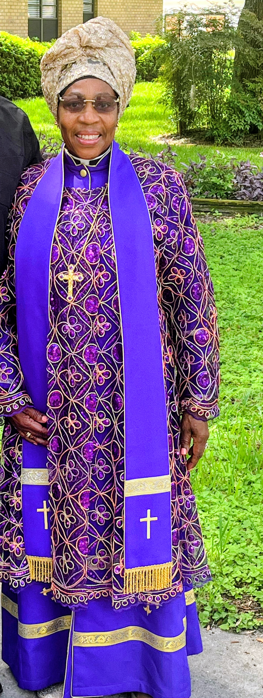

Our Founder

Bishop Dr. Mother Bernadette S. Lemaitre, D.D.
Founder and Spiritual Leader
With over 45 years of dedicated service in ministry, Bishop Dr. Mother Bernadette S. Lemaitre, D.D., has devoted much of her life to spiritual leadership, worship, and service to others.
In 2009, she established The Courts of St. Catherine, a Spiritual Baptist church rooted in the traditions of faith, prayer, and spiritual growth. Through her leadership, she has worked to create a spiritual home where individuals and families can strengthen their relationship with God and experience the beauty of holiness.
Her commitment to ministry is further reflected in her educational accomplishments, including earning her Doctor of Divinity (D.D.) degree.
Today, Bishop Dr. Mother Lemaitre continues to provide spiritual guidance, encourage unity, and uphold the rich traditions of the Spiritual Baptist faith.
Our Spiritual Foundation
"But strive first for the kingdom of God and his righteousness." - Matthew 6:33 (NRSV)
Come Worship With Us in the Beauty of Holiness.